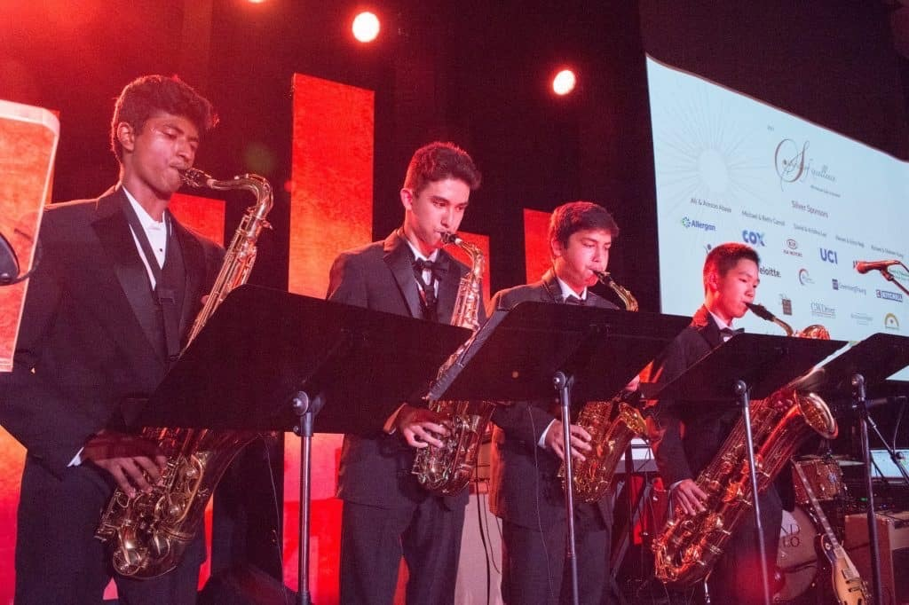

One day our band director Mr. Stevens asked our Symphonic Band’s sax section to perform as a Saxophone quartet at our city’s Spirit of Excellence Gala. It was a pretty big event, so we were all excited to start practicing. Again, it was one of those things that just clicked. I started to organize practice sessions to play whatever music we like, gradually make our own arrangements, and just hang out. After a while, these practice sessions became part of our weekly routine.
We started inviting more of our friends to join in on our practice sessions. Later we started to perform at various events, and we really started to feel connected with the community. I never went to senior centers or homeless shelters before, but once we started to perform monthly at these places, I started to feel like part of their community. We performed live classical, jazz, pop and funk music at senior centers, nursing homes, homeless shelters, multicultural festivals, fundraising events, clubs, professional symposiums, and shopping centers. It’s always nice seeing people singing, nodding, dancing, and cheering to our tunes.
It has been three years since our group first got together, and we all certainly progressed as musicians, but more than that, we learned what it’s like to share music as part of a community.
To see some videos of our performances, visit http://goldenwindsax.com/